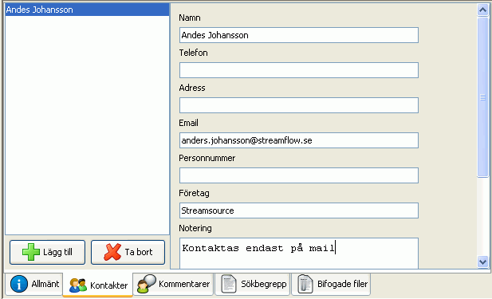

Om du klickar på fliken Kontakter längst ned i huvudfönstret får du möjlighet att ange en eller flera personer som kan kontaktas i ärendet. Vill du ta bort en kontakt markerar du kontakten i listan till vänster och klickar på knappen Ta bort.
